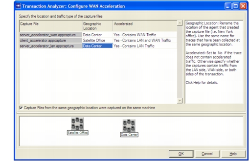

Importing WAN-Accelerated Packet Traces The following procedure describes the process for importing WAN-accelerated packet traces into Transaction Analyzer. Procedure 12-1 Importing WAN-Accelerated Packet Traces 1 Choose File > Open Packet Trace(s) > In Transaction Analyzer (WAN-accelerated Environment)… 2 In the “Merge Capture Files from WAN Accelerated Environment” dialog box, click Add, select the WAN-accelerated packet traces, and click OK. 3 In the Configure WAN Acceleration dialog box, configure the following information: • Geographic Location—Renames the location of the agent that captured the data. Note—It is good practice to check the topology pane (bottom) and verify that the defined sites accurately reflect the tier locations in the network. • Accelerated—Specifies whether the packet trace includes LAN and/or WAN traffic. To analyze an application in a WAN-accelerated environment, you must capture both LAN and WAN traffic at every geographic location.  Click OK to continue. 4 In the “Rename Tiers” dialog box, rename the tiers. For more information, see Rename Tiers. Click OK to continue. The WAN-accelerated packet traces are imported in Transaction Analyzer. End of Procedure 12-1